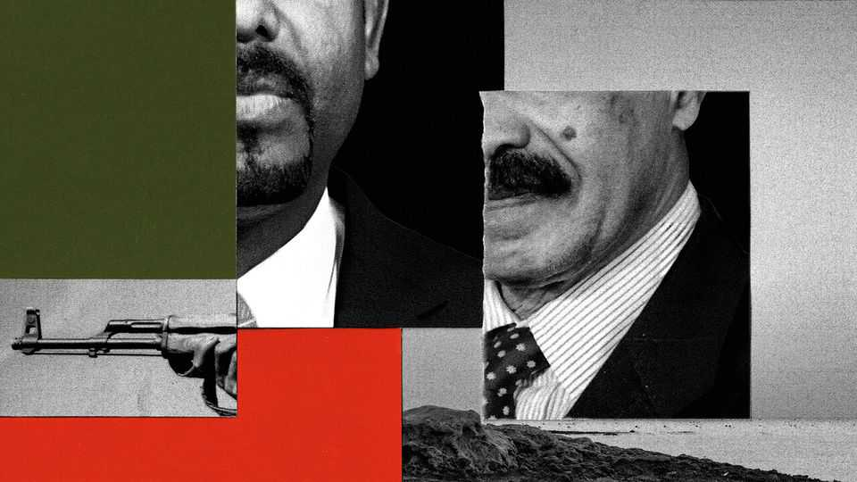
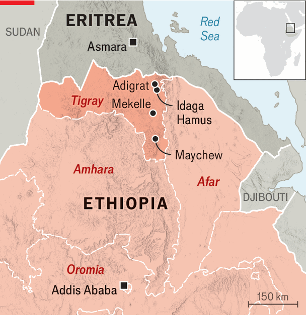

Ethiopia and Eritrea are on the brink of another conflict
As Eritrean forces advance in Tigray, all-out war with Ethiopia seems almost inevitable

Oct 8th 2026
The projectile shrieked past and exploded. Hayelom Berhane was unharmed, but others were not so lucky. Mr Hayelom (not his real name) says 21 civilians were killed by the blast in Maychew, a town in the south of Ethiopia’s Tigray region that was shelled by the federal army on September 29th. Forces loyal to Tigray’s rulers, the Tigray People’s Liberation Front (TPLF), withdrew shortly afterwards, part of a retreat in the face of advances by government troops. Looting and banditry have erupted in some areas since then. “There is a real fear among the public that [the army] will not be able to stabilise the situation,” says Mr Hayelom.
When war broke out in Ethiopia’s northernmost region on September 23rd, the TPLF and a number of allied rebel groups initially went on the offensive. Vowing to topple the federal government of Abiy Ahmed, Ethiopia’s prime minister, they made incursions into the neighbouring regions of Amhara and Afar. Yet the tide has since turned against them with remarkable speed. In recent days the Ethiopian army and militias allied with it have erased the rebels’ gains and advanced rapidly through southern Tigray. On October 4th federal forces took control of Mekelle, the regional capital, ousting the TPLF’s leaders from what had been their seat of government for decades.

Rather than heralding a short or contained war, the government’s swift advances may have set the stage for a far more dangerous confrontation. Ethiopia claims that Eritrea, its neighbour to the north, backs the rebels, and that Eritrean soldiers took part in the recent fighting in Afar. Since then Eritrean troops have advanced into Tigray at least as far south as Adigrat and Idaga Hamus (see map). On October 7th Ethiopia demanded that they “leave Ethiopian territory without delay” and reportedly carried out drone strikes on Eritrean troops near Idaga Hamus. The two countries now look to be closer to a direct conflict than at any time since 1998-2000, when they fought a war which killed tens of thousands.
Mr Abiy’s government sees Isaias Afwerki, Eritrea’s dictator, as a meddler at home and across the Horn of Africa. Eritrea is believed to have supplied weapons and logistical support to the TPLF for months. It also supports other Ethiopian rebel militias, in particular the Fano from Amhara that have been fighting Mr Abiy’s government since 2023. Mr Isaias has built strong ties to Egypt, which is at loggerheads with Ethiopia over a giant dam the latter has built over the Nile. On October 4th Egypt’s president hosted Mr Isaias, alongside the leaders of Sudan and Somalia, in the city of Alamein. They agreed to co-ordinate military and intelligence efforts if the conflict expanded to Ethiopia’s borders, Egyptian sources told Reuters.
Not long ago, such a diverse coalition against Mr Abiy would have seemed unthinkable. During the previous Tigray war, which raged from 2020 to 2022 and probably killed hundreds of thousands of people, Eritrea and the Fano fought alongside Mr Abiy’s government against the TPLF. Since then the prime minister has fallen out with them. The Fano accuse him of favouring his own ethnic group, the Oromo. Mr Isaias fears Mr Abiy covets Eritrean territory, given his repeated demands for access to Eritrea’s Red Sea ports. (Mr Abiy insists he would pursue it peacefully.) Ethiopia has also hosted Eritrean rebels.
On September 20th the TPLF, the Fano and five other groups, including the Oromo Liberation Army, said that they had formed an alliance with the aim of overthrowing the prime minister. Eritrean officials have denied having any part in the scheme. But as fighting in Tigray has intensified, these denials have become harder to sustain. “The plan is [for Eritrea] to join,” a source involved in forming the alliance told The Economist. On October 1st Ethiopia closed its embassy in Eritrea and expelled ten Eritrean diplomats, and an Egyptian one. Eritrea severed diplomatic relations; Egypt’s foreign ministry insisted it had “no involvement in what is happening inside Ethiopia”.
Since their departure from Mekelle, the TPLF’s leaders are thought to have retreated north towards the Eritrean border. When federal forces last drove the TPLF from Mekelle, in November 2020, the group launched an insurgency from the countryside and six months later forced the Ethiopian army out of Tigray. On October 1st the TPLF’s chairman, Debretsion Gebremichael, promised to make the region “an ember to the enemy” once again. A spate of explosions at Ethiopian airports and military sites, most recently at the army headquarters in Addis Ababa, the capital, suggests the rebels also intend to take the war beyond Tigray, this time using long-range drones.
The TPLF’s latest insurgency could fizzle. The party is a shadow of the force it was in Ethiopian politics before Mr Abiy took office in 2018. Even in Tigray its power has wilted. Many Tigrayans loathe its leaders’ new alliance with Eritrea, whose troops carried out some of the previous war’s worst atrocities. Some of the TPLF’s most seasoned officers have defected to Mr Abiy. Tadesse Werede, Tigray’s top commander during the last war and its interim president until Mr Debretsion ousted him in May, has been missing with three colleagues since October 3rd. They are thought to have been abducted by their former comrades to prevent them from helping the federal army.
Still, it would be premature to write off the TPLF. After early defeats in southern Tigray, it says it chose to retreat rather than confront the Ethiopian army head-on. If that is true, much of its fighting force may still be intact. Its allies among the Fano remain active next door in Amhara, where battles continue. “We have withstood the regime by ourselves for more than three years,” says a Fano leader. “We used asymmetric war…this game will continue.”
Then there is Eritrea. How far Mr Isaias is prepared to go to save the TPLF, whose leaders he has despised for decades, is unclear. Many analysts assume his main aim in backing rebels in northern Ethiopia has been to maintain a buffer between his forces and Ethiopia’s. Yet by sending his troops south just as Ethiopian soldiers chase the tplf’s forces to the border, he may have given Mr Abiy an excuse to invade.
Mr Abiy has yet to comment on the latest fighting. After years of conflict the Ethiopian army is thought to be larger than ever. Outside pressure would help. On October 4th America’s State Department urged Ethiopia and Eritrea to respect each other’s territorial integrity. While Western diplomats have broadly backed Mr Abiy’s crackdown on the TPLF, they have warned him not to try to seize Eritrea’s coast by force. Yet they may not put all that much pressure on the two sides, given that their attention is focused on the wars in Iran, Ukraine and Yemen.
Regional politics make the situation even dicier. Eritrea and Egypt are both important allies of Sudan’s army, which is involved in its own civil war at home. Rebels in that war, who are supported by the United Arab Emirates, an Ethiopian ally, have recently begun using Ethiopian territory to mount offensives against Sudan’s army. Open-source investigators also suggest that Ethiopia has allowed imports, by air, of weapons which may well be going to fuel fighting there. The Horn of Africa is already the site of one regional proxy war. It may soon suffer another. ■
Sign up to the Analysing Africa, a weekly newsletter that keeps you in the loop about the world’s youngest—and least understood—continent.